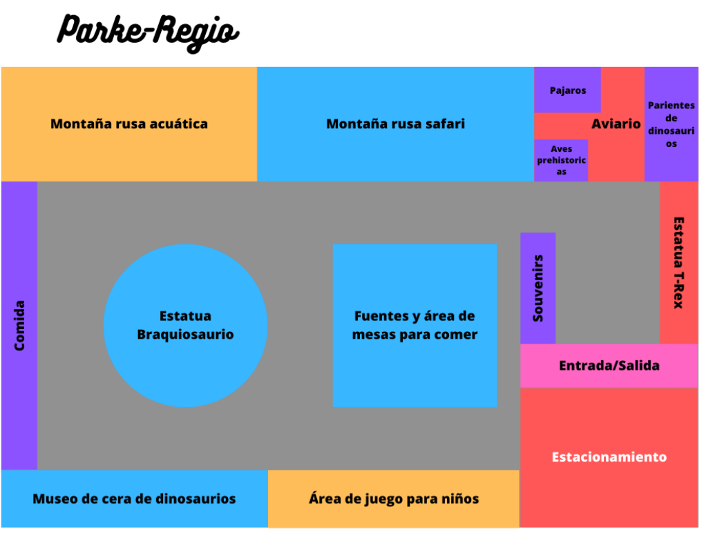
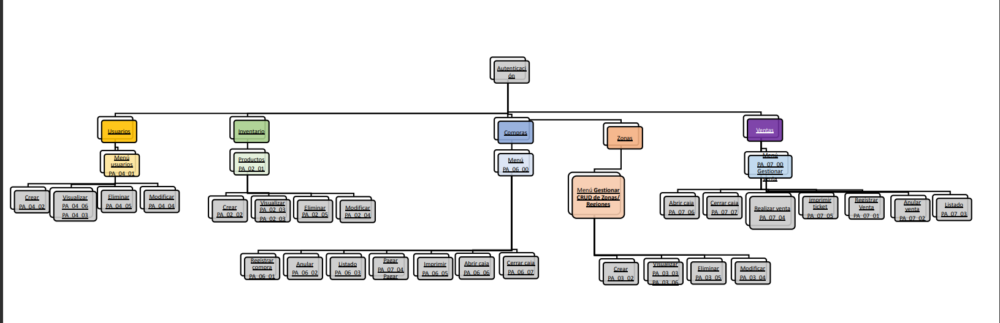

1.1 Misión : Proporcionar a nuestros clientes una experiencia inolvidable en nuestras instalaciones, por medio de emocionantes atracciones, espectáculos fascinantes y una atmósfera única y envolvente
Visión: Convertirnos en el parque jurásico más reconocido y emblemático a nivel mundial, siendo reconocido por nuestra excelente calidad y servicio hacia nuestros clientes. Ser un referente dentro de la industria de parques y hacerlo de manera sostenible, respetuosa para el medio ambiente y con la sociedad que nos rodea
Pake Regio: Atracciones con dinosaurios: El parque podría contar con atracciones temáticas que simulan un viaje en el tiempo a la era de los dinosaurios, con animatronics que simulan a estas criaturas prehistóricas en movimiento. Por ejemplo, se podría tener una montaña rusa que simule un paseo por una selva prehistórica, o un simulador de movimiento que haga que los visitantes sientan que están volando sobre un paisaje lleno de dinosaurios. Decoración temática: El parque podría estar decorado con elementos que recuerden la era de los dinosaurios, como esculturas de dinosaurios, réplicas de fósiles, y representaciones de ambientes naturales de esa época. La idea es crear una atmósfera que transporte a los visitantes a un mundo prehistórico. Juegos interactivos: Además de las atracciones mecánicas, se podrían incluir juegos interactivos que permitan a los visitantes aprender sobre los dinosaurios de manera lúdica y entretenida. Por ejemplo, se podría tener un juego en el que los visitantes tengan que resolver acertijos sobre la vida de los dinosaurios. Entretenimiento en vivo: Para que los visitantes se sientan aún más inmersos en la temática del parque, se podrían ofrecer espectáculos en vivo con dinosaurios. Por ejemplo, se podría tener un show en el que se simule una excavación de fósiles, o un espectáculo de acrobacias con dinosaurios animatrónicos. Tiendas y restaurantes temáticos: Para que los visitantes puedan llevarse un recuerdo del parque, se podrían ofrecer tiendas con souvenirs temáticos, como camisetas, peluches y libros sobre los dinosaurios. Además, los restaurantes podrían tener menús temáticos, como por ejemplo un platillo llamado "Pterodáctilo frito" o una bebida llamada "Triceratops refrescante". Con un aproximado de 500 visitantes diarios.
